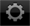

各画面でできること
トップメニュー

本ソフトウェアが起動するとトップメニューが表示されます。


 Load
Load
DJプレーヤーと接続してDJプレイを行います。
 Connect
Connect
コンピューター上のrekordbox (Mac/Windows用) ですでに解析済みの音楽ファイルおよび各種ポイント情報やプレイリストなどを本ソフトウェアへ取り込みます。 また、 本ソフトウェアで更新した各種ポイント情報やプレイリストなどをrekordbox (Mac/Windows用) へ反映させます。
 Import
Import
モバイルデバイス内の音楽ファイルを解析して本ソフトウェアのライブラリに追加します。
 Help
Help
ヘルプメニューを開きます。
 Settings
Settings
各種の設定を確認・変更します。
ツールバー
画面の下部に表示されるツールバーのアイコンについては、 下記の表をご覧ください。
アイコン | 説明 | |
Menu | トップメニューに戻ります。 | |
 | Browse | ブラウザーパネルの最上位の階層に戻ります。 |
 | Playing | プレーヤーパネルが開いて、 再生中の曲が表示されます。 |
 | USB | DJ機器 (XDJ-AERO) にセットされたUSBデバイス内のコンテンツをブラウズして、 DJ機器 (XDJ-AERO) で再生します。
|
 | Import | モバイルデバイス内の音楽ファイルを解析して本ソフトウェアのライブラリに追加します。 |
 | Settings | 各種の設定を確認・変更します。 |
 | Help | ヘルプ (ユーザーマニュアル) を開きます。 |